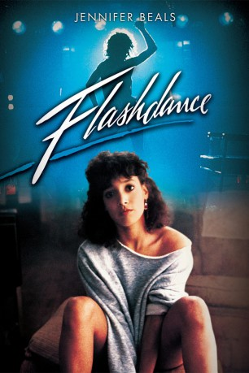

#10755 Flashdance
Auszeichnungen: 1 Oscars gewonnen für 3 Oscars nominiert 2 GoldenGlobes gewonnen 1 BAFTA-Awards gewonnen
 
 IMDB-Wertung: 6.2 / 10
IMDB-Wertung: 6.2 / 10  Tomatometer: 35
Tomatometer: 35  Metascore: 39
Metascore: 39 
Die 18jährige Alex arbeitet tagsüber in einem Stahlwerk als Schweißerin. Abends und nachts verdient sie sich ihr Geld als Tänzerin in einem schäbigen Nachtclub. Sie möchte aufs Konservatorium, um eine klassische Ballettausbildung zu erhalten. Alex verliebt sich in ihren Chef, der hinter ihrem Rücken seine Beziehungen spielen lässt. Als sie davon erfährt, wirft sie alles hin und trennt sich von ihm. Aber sie reißt sich zusammen, nimmt den Vortanztermin wahr und überzeugt mit einer sensationellen akrobatischen Tanznummer die Prüfungskommission.
Jahr: 1983
Dauer: 94 Minuten
FSK: 12
Land: USA Studio: Paramount PicturesTonspuren: DD2.0 - ,
Untertitel:
Auflösung: 1080p (1920x1080) Größe: 7823 MB
Genre: Drama, Musik, Liebe
Regisseur: Adrian Lyne
Drehbuch: Thomas Hedley Jr., Joe Eszterhas, Thomas Hedley Jr.
Soundtrack: Giorgio Moroder
Darsteller:
- Jennifer Beals als Alex Owens
 Michael Nouri als Nick Hurley
Michael Nouri als Nick Hurley- Lilia Skala als Hanna Long
- Sunny Johnson als Jeanie Szabo
 Kyle T. Heffner als Richie
Kyle T. Heffner als Richie- Lee Ving als Johnny C.
- Ron Karabatsos als Jake Mawby
- Belinda Bauer als Katie Hurley
- Malcolm Danare als Cecil
 Philip Bruns als Frank Szabo
Philip Bruns als Frank Szabo- Micole Mercurio als Rosemary Szabo
 Lucy Lee Flippin als Secretary
Lucy Lee Flippin als Secretary Don Brockett als Pete
Don Brockett als Pete- Cynthia Rhodes als Tina Tech
- Robert Wuhl als Mawby's Regular
 Matt Landers als Mawby's Regular
Matt Landers als Mawby's Regular Frank Pesce als Mawby's Regular
Frank Pesce als Mawby's Regular- Debra Gordon als Dancer at Repertory #3
 Tony De Santis als Waiter #2
Tony De Santis als Waiter #2 Bob Harks als Priest
Bob Harks als Priest- Monique Gabrielle als Stripper (uncredited)
- Durga McBroom als Heels
- Stacey Pickren als Margo
- Liz Sagal als Sunny
- Norman Scott als Normski
- Mr. Freeze als Mr. Freeze
- Frosty Freeze als Frosty Freeze
- Prince Ken Swift als Prince Ken Swift
- Crazy Legs als Crazy Legs
- Steve Price als Mawby's Regular
- Darren Roy als Mawby's Regular
- Larry John Meyers als Welder #1
- David DiManna als Welder #2
- Helen Dexter als Dancer at Repertory #1
- Mark Anthony Moschello als Dancer at Repertory #2
- Erika Leslie als Blonde Skater
- Jim McCardle als Ice Rink Official #1
- Ernie Tate als Ice Rink Official #2
- Bettina Birnbaum als Stripper #1
- Deirdre L. Cowden als Stripper #2
- Colin Hamilton als Maitre D'
- Marjean Dennis als Woman at Restaurant
- Ann Muffly als Woman at Hanna Long's
- Henry Crowell Jr. als Racquetball Player
- Frank Tomasello als Harry
- Jumbo Red als Grunt
- Evette De Marco als Ballet Dancer
- Richard Fritz als Ballet Dancer
- Mike Berro als Dance Judge #5 (uncredited)
- Ella Demler als Little Dancing Girl (uncredited)
Datei: X:\1983\Flashdance (1983, FSK12, 1920x1080).mkv seit 22.02.2019
Festplatte: HD 1980-1986
 Es gibt insgesamt 35 Filme in der Gruppe '1983'
Es gibt insgesamt 35 Filme in der Gruppe '1983'